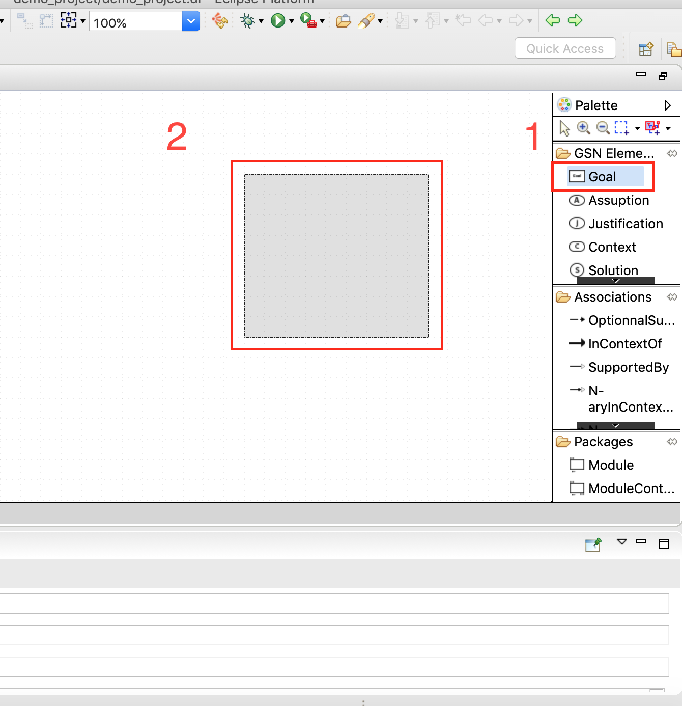
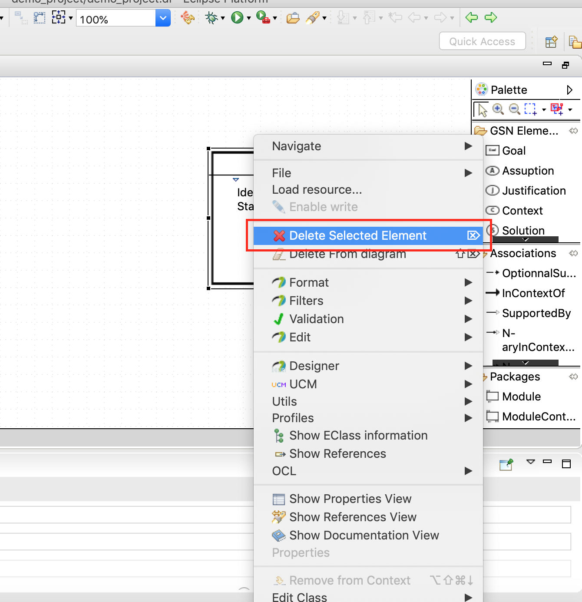
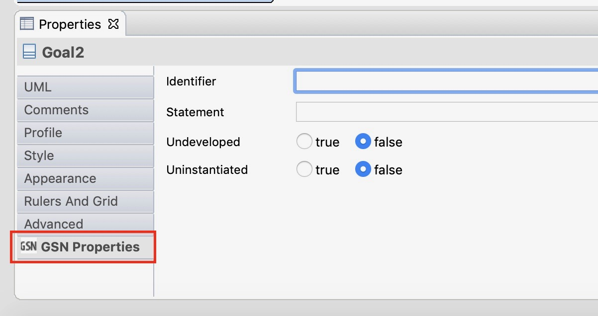

Elements can be created by clicking on their name in the Palette and then drawing their shape on the diagram with the mouse.
Elements can be delete by right-clicking on them and selecting the "Delete Selected Element" option.
Elements properties can be edited in the "GSN Properties" section of the "Properties" view.
Some properties have an influence on the visual representation of the elements (the "undeveloped" property, for example). The diagram will be updated in real time when editing such properties.